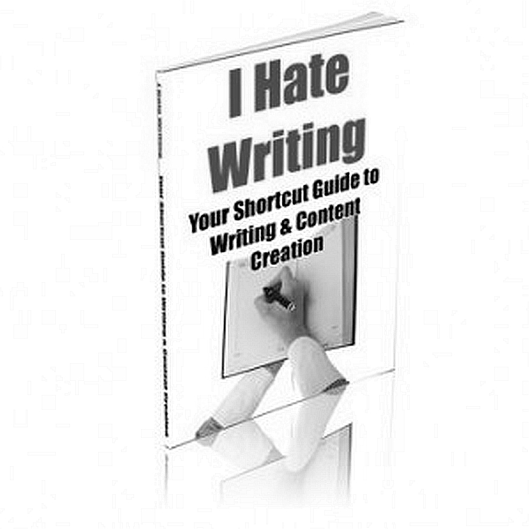
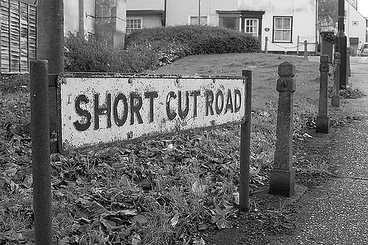

International
InternationalPismo skrócone czy krótkie - Krupiński
2012-02-06 | autor: flamenco108W ramach prezentowania cudzych tekstów pozwalam sobie tutaj przedrukować krótki felieton Jerzego Krupińskiego, znanego niektórym czytelnikom tego bloga jako autor najpopularniejszego ongi podręcznika do stenografii systemu Polińskiego z r. 1971. Artykuł poniższy ukazał się w Stenografie Polskim nr 7(108) z września roku 1966(XX).
Od razu zaznaczam, że jeżeli istnieją spadkobiercy P. Krupińskiego, to bardzo proszę o kontakt przez strony tego bloga.
Pismo skrócone czy krótkie?
Spotkać się można nieraz z określeniem, że stenografia jest pismem skróconym, a to z tego pozornie prostego powodu, że jest znacznie krótsza od pisma zwykłego. używanie w stosunku do stenografii terminu “pismo skrócone” spotkać można nawet w niektórych podręcznikach stenograficznych. Wydaje się, że w dziedzinie terminologii, dotyczącej tak dość ważnej sprawy jak zdefiniowanie pojęcia stenografii - potrzebne jest pewne uściślenie.

Określenie “pismo skrócone”, używane w stosunku do stenografii jako takiej, wydaje mi się terminem zupełnie błędnym. Stenografia nie jest pismem skróconym dlatego, że założenia dotyczące budowy systemu stenograficznego nie polegają na skróceniu jakiegoś innego pisma. Pismo stenograficzne jest pismem samoistnym, rządzącym się zupełnie innymi zasadami, niż pismo zwykłe. Wprawdzie podstawowe elementy pisma stenograficznego wywodzą się z najprostszych elementów, z których zbudowane są litery kursywowego pisma zwykłego, ale na tym kończy się, zresztą bardzo pozorna, łączność pisma zwykłego ze stenografią. Ta bardzo nikła łączność jest tylko pozorna dlatego, że gdybyśmy nawet chcieli, nie znając pisma zwykłego, wymyślić jakieś podstawowe elementy graficzne dla pisma stenograficznego, to byśmy na pewno nie doszli do niczego innego, jak właśnie do tych najprostszych elementów, na których podstawie zbudowane są litery pisma łacińskiego. Stąd chyba wysnuć można wniosek, że stenografia jest pismem krótkim w stosunku do pisma zwykłego, będącego w porównaniu do stenografii pismem długim.

Krótkość swą zawdzięcza stenografia przede wszystkim prostym, utworzonym dla poszczególnych dźwięków społgłoskowych znakom (nie literom!), które łączą się następnie w grupy spółgłoskowe i zgłoskowe, oraz specjalnym krótkim znakom dla przedrostków, przyrostków itd. Nie mniej ważną i może najcharakterystyczniejszą cechą pisma stenograficznego jest symbolizacja samogłosek, tzn. oznaczanie ich w pewien określony, obrazowy sposób w poprzedniej lub następnej spółgłosce lub grupie spółgłoskowej. Wskutek tego pismo stenograficzne jest zasadniczo pismem sylabowym, zgłoskowym, a więc staje się niejako pismem naturalnym, w stosunku do sztucznego, zwykłego pisma literowego.

W związku z tym nasuwa się refleksja, że stenografia jest więc pismem krótkim i jednocześnie pismem naturalnym, w stosunku do długiego i, niestety, bardzo sztucznego pisma zwykłego. Dopiero w obrębie samego pisma stenograficznego dokonywanych jest w celach praktycznych szereg operacji polegających na różnych skracaniu tego pisma (znaczniki, skrócenia logiczne, tematyczne itd.), co jest już zupełnie odrębnym tematem wchodzącym w zakres ogólnej teorii owego krótkiego pisma, jakim jest stenografia.
Jerzy Krupiński
2012-02-06 autor: flamenco108